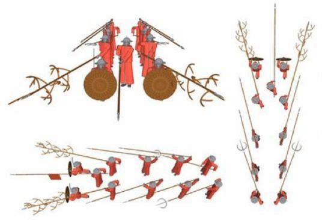
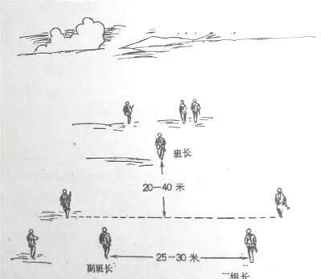
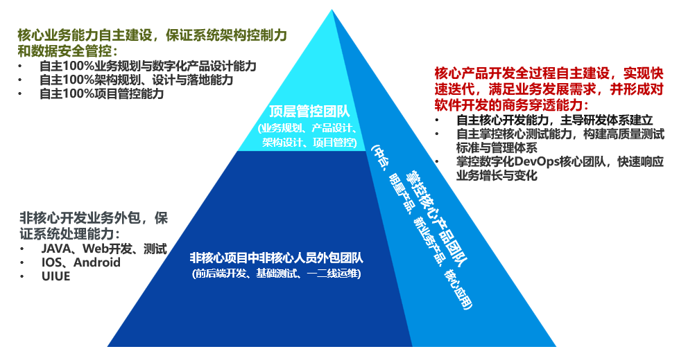
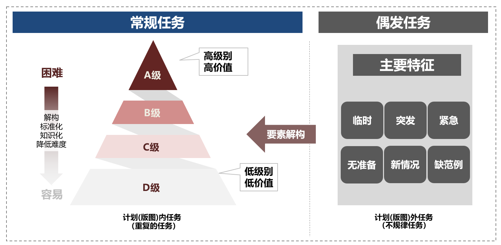
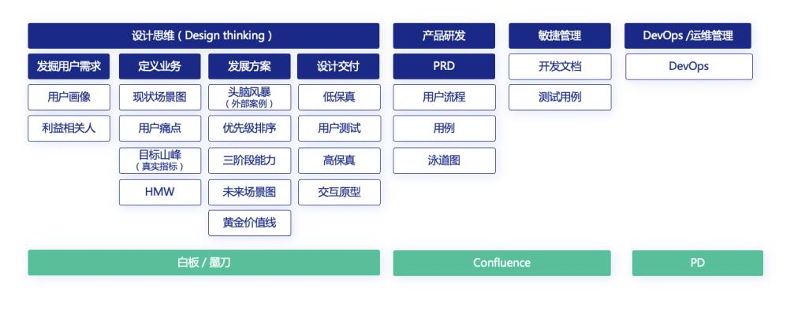
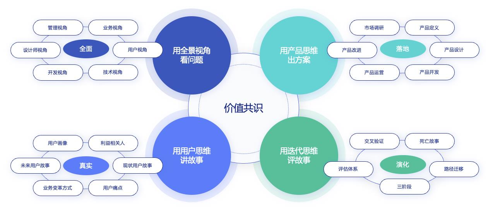
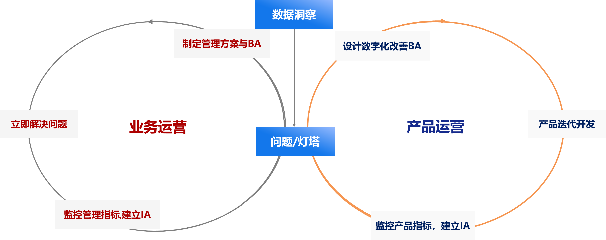

体系数字化部部门工作法
部门工作法
（方法篇）
（2023 年 12月）
体系数字化部
体系数字化部部门工作法
2 / 47
目录
一、 我们从哪里来，到哪里去 .................................................................................. 4
为什么会有我们.................................................. 4
为什么要有部门工作法............................................ 4
二、 数字化思维是业务的打开方式，是数字化转型的根本 .................................. 5
数字化，文明的门槛.............................................. 5
做好数数、分类、定标准.......................................... 6
云原生和服务化.................................................. 7
从第一性原理出发，进行底层思考 New!!! .............................. 7
“白痴指数”是第一性原理的具体应用 New!!! .......................... 9
三、 能力建设是推进数字化转型的基础 ................................................................ 10
能力是在 VUCA 时代的立命之本.................................... 10
数字化能力三角形............................................... 12
部门建设的核心是人员能力建设................................... 13
管任务就是在管能力............................................. 15
做工时计划就是在做能力预算..................................... 17
打造硬核团队 New!!! ............................................... 19
直接沟通 New!!! ................................................... 20
四、 管理企业架构是数字化转型的核心 ................................................................ 21
架构是面对复杂系统的解决方案................................... 21
始于架构，终于架构的探索实践................................... 21
指标不是 BI，是架构在经营维度的呈现 ............................ 22
五、 变革项目管理是推动数字化转型的有效路径 ................................................ 23
业务 IT一体化战队.............................................. 23
让一线呼唤炮火................................................. 23
基于架构设计需求和变革项目..................................... 24
TAM 模型 ....................................................... 25
如何做好数字化项目管理......................................... 25
如何看待数字化转型过程中的曲折................................. 26
用户故事驱动产品设计........................................... 26
ROA 模型 ....................................................... 28
体系数字化部部门工作法
3 / 47
勇于冒险打破常规
New!!!
........................................... 30
六、 数字化产品运营是搭建数字化转型的增长飞轮 ............................................ 32
工作台是我们要打造的核心产品................................... 32
理解员工工作台................................................. 32
理解管理者工作台............................................... 33
产品运营，立项要有灯塔......................................... 34
系统运维要用数据进行运营....................................... 35
快速上线小步快走............................................... 36
数据驱动的业务及产品运营....................................... 36
运营要聚焦用户价值 New!!! ......................................... 38
运营是模型的敏捷迭代 New!!! ....................................... 38
五步工作法 New!!! ................................................. 39
七、 数字化转型需要一种对于坚持的信仰 ............................................................ 41
做好船长，洞悉本质............................................. 41
沉下去，闻到泥土的芳香......................................... 41
“不可能”的目标 New!!! ........................................... 42
将身影留在现场 New!!! ............................................. 44
保持“饥饿感”New!!!.............................................. 45
但行好事，莫问前程 New!!! ......................................... 46
体系数字化部部门工作法
4 / 47
一、 我们从哪里来，到哪里去
为什么会有我们
低阶看到的是困难重重，难以逾越，高阶看到的是“与非门”的
关联，“0与 1”的表达。如今正是变革的临界点，继续用传统思维和
意识去思考，用传统的流程去遵循，已无法解决问题，这正是需要我
们强调全面推倒重来，全面创新构建的时期，转意识、转模式、转组
织、转文化、转方法。
聚是一团火，散是满天星。在数字化转型已成为企业必答题的今
天，需要有这么一群人，像“盗火者”一样，在公司培育出跨越时代
的数字化火种，点亮数字化的科技树。体系数字化部作为数字化转型
先锋，要以为红旗赋能管理能力、成为世界一流的管理标杆为使命，
要成为数字化变革、体系变革、价值创造、能力提升的箭头部门，勇
于深入底层，构建自主先进能力；敢为人先，创建自主理论体系；踔
厉奋发，构建差异化能力；履践致远，追求极致的工作质量，引领业
务创新，推动集团公司数智化转型。
为什么要有部门工作法
作为一个团队，一个组织，我们要有一些坚守，要有统一的行事
规范和工作准则，这些规范和准则来自每一次部务会、质量例会、专
题会上每个议题的讨论，每一个案例对彼此的启发，我们希望用数数、
分类、定标准的方式整理出来，沉淀成能力，让更多的人看到和理解，
并能在未来的工作中践行，成为我们真正的“核”。也正是由于，它
来自于每一次会议、每一次碰撞、每一篇感悟，更是一个共创共享共
建的过程，是属于集体的一份智慧的沉淀。
体系数字化部部门工作法
5 / 47
二、 数字化思维是业务的打开方式，是数字化转型的根本
数字化，文明的门槛
当下处于百年未有之大变局，世纪疫情和新能源智能网联给汽车
产业带来巨大冲击，传统汽车企业在尝试拥抱互联网，去感知客户创
造体验，而互联网人在进军制造和供应链，去试图掌握百年的工业积
淀。对一汽而言，数字化正是战略转型需要去拥抱去学习去淬炼的能
力，数字化转型的根本是业务生态和作业方式的全面变革，以数字化
引领业务改变，实现第一曲线向第二曲线的跨越，我们要深入思考通
过数字化如何给一汽、给红旗打造强悍的体系能力，而不是仅仅停留
在之前通过 IT产品简单的满足用户需求。
在中国一汽 2022年工作要点写到：“数智化正如工业化一样是一
道文明的门槛，要想生存发展、世界一流，必须要越过这个文明的门
槛，舍此别无它途；要切实把数智化转型作为当前所有业务工作的基
石，把数智化建设业务作为一切工作的主体，真正实现业务和数智化
的完全融合，彻底改变就数智化论数智化，业务和数智化“两张皮”
的问题；也要认知到数智化是一个由量变到质变而且永无止境的过程，
必须也只有持续奋斗、不断创新，才能登上发展的高峰。”
数智化转型是当前所有业务工作的基石，把建设数智化业务作为
一切工作的主体，真正实现业务和数智化的完全融合，引入 TOGAF，
贯彻企业架构，统一工作语言。以客户识别和业务价值为起点，以业
务流程为主线，以业务指标为关键，通过信息架构进行业务的数字孪
生，构建基于云原生架构的数字产品。以用户识别、明确价值主张为
基点，审视现有业务架构，梳理建立业务单元，将业务要素对象化、
体系数字化部部门工作法
6 / 47
标准化、规则化的过程中，通过推进业务变革点落地，实现效能 100%，
通过上线云化工作台和能力中心，实现业务 100%孪生，即双 100 目
标。
做好数数、分类、定标准
数字化的 0 和 1，特征是“穷尽”。二进制的 0 和 1 演绎了计算
机的大千世界，计算机通过晶体管进行电子信号的传输，有电压表示
为“1”，没有表示为“0”，计算机中一个字节(byte)有 8个比特位
(bit)，也就是 8 个状态为“0”或“1”的组合。在计算的世界里，
通过抽象和分层，实现用户指令到计算机硬件执行的层层转码，从应
用程序到操作系统、从汇编语言到机器语言，建立起各层级间彼此的
通讯协议，完成信息的快速处理和计算，而这一切的都是建立在 0和
1的基础之上。
应用穷尽的思维，操作系统 OS 建立了计算机和外设硬件之间的
通信协议，做出适配不同外设的软件包，在 OS 整体架构下做软件解
析，OS就是全域进行数数，用二进制算加减乘除还原到硬件集，做穷
尽就是数字化。
所有事情的本质都是相通的，都是可以“他山之石可以攻玉”！
数字化的特征是“穷尽”，管人、管事、管系统，把内容穷尽了就是数
字化。原来穿不透的，现在是可以穷尽的，把所有的业务进行全域、
全要素、全量、全流程的穷尽，形成管理的业务对象，作为每一个
object去管理，建立管理对象横向之间和纵向穿透的通讯协议，让组
织成为有机协同的整体，这些归根结底都可以用 0和 1来表达，都是
穷尽和通讯的数字化思维。
“数数”是干所有事情的开端，“数”数不明白后续干的都没有
体系数字化部部门工作法
7 / 47
基础。数数就是将管理主体对象化，是管理对象的穷尽，分类就是抽
象和归集，将管理主体标签化属性化，是业务场景和模式的穷尽，定
标准就是找到业务价值和标准，形成判断处理逻辑，以此来决定怎么
管。
用“数数、分类、定标准”的方式来管理安全，就是要把安全的
事情都想一遍，譬如危险源的穷尽、危险作业的穷尽、安全设施的穷
尽（逃生通道和灭火器数量）、人员能力的穷尽，对每一类的管理对
象制定相应的标准，安全才能管好。
云原生和服务化
集团公司数智化建设，必须“面向服务”。云原生、服务化是数
字化发展的总体趋势，我们的数智化建设，必须符合行业的总体发展
规律。云原生思想在业务上应用，要对业务的解构更加底层和精细，
重构业务流程、解耦业务活动、定义业务单元，使之组件化、能力化、
服务化，让每个人都能知道什么时间，做什么事，达到什么标准，这
就是基于“云原生”的架构理念。
从第一性原理出发，进行底层思考 New!!!
第一性原理来源于古希腊哲学家亚里士多德提出哲学观点，每个
系统中存在最基本的命题和假设，它不能被省略、删除，或违反。第
一性原理以最本质最基础的无法改变的条件作为出发点，倡导理解最
基本的真理，看到事物的本质，并基于此进行推理，重新思考怎样做。
埃隆·马斯克是第一性原理的推崇者，他在电动汽车、航空航天、
清洁能源等多领域都取得了颠覆性成果，他将锂电池拆分到最基础原
材料，并计算这些原材料的成本，对比零售价与整装锂电池，拆分后
体系数字化部部门工作法
8 / 47
元素成本价仅为零售价的 13%，便以 87%为空间基础自行研发生产动
力电池，进而在电动汽车价值链上取得商业优势。
利用第一性原理来思考转账这一行为，为了支付模式便捷，就要
砍掉无效的注册、审批、验证的环节，支付本质上就是需要对方的一
个唯一 ID，不论是身份证、用户名、卡号、电话号、邮件地址等等，
甚至是聊天对话框，本质上都是一样的，eBay 使用电子邮件转账，
微信使用聊天框转账，所以场景+孪生的力量是无穷的，关键是怎么
解决用户“点击鼠标次数少”的痛点，让人更舒服，懂人性的人才能
懂生意。
第一性原理是思维方式，即一切都可以重新做一遍。工作中我们
不是简单的发现问题、分析问题、解决问题，要时常反思我们为什么
这么做，从根本上去思考谁是客户，客户需要什么，我们的业务的打
开方式是否正确。产品思维本质就是第一性原理，对于人性的洞察，
让人不自觉去使用。
我们在日常开展业务时，很多时候业务做不好，就是不把第一性
原理放在首位，很多时候瞻前顾后，犹犹豫豫，很多时候把各个点都
觉得考虑到位了，反倒把我们要做事情的本心忘掉了。TOGAF 业务架
构梳理方法，其实第一步就是在让我们关注第一性原理，思考我们的
用户是谁，用户的旅程是怎样的，用户带来的价值是什么样的，只有
这样我们的方向才不会错。
我们坚持用架构思维进行业务设计引领业务变革就是典型的第
一性原理思维。数字化转型的浪潮下，绝大多数企业都认识到数字化
转型是业务与 IT 的融合，业务是基础。所以包括我们在内的企业都
经历过聘请咨询公司帮我们梳理业务架构，设计业务流程，实际上我
体系数字化部部门工作法
9 / 47
们采用了太多的经验参数，这既包括拿来的经验与固有经验，这使我
们无法实际落地而一次次的推倒重。甚至包括业务流程固化的思维都
是经验参数的原罪，大多数人都曾被西方文化入侵影响渴求一套固化
流程只做转动的陀螺不去思考为什么这么做，我们常见的语境就是经
常有人会问这事儿有制度吗？有流程吗？员工们更乐于挑战管理人
员而不愿意挑战规则。直到我们引入了 TOGAF 进行架构设计，创新
性的用业务单元作为业务设计的最小单位，只考虑活动的用户、价值、
场景、输入输出和规则，这让业务还原了本质，去伪存真，使我们工
作台开发有了最基本的骨架。
“白痴指数”是第一性原理的具体应用 New!!!
在《埃隆·马斯克传》里有这样的记录，“当马斯克因离谱的出
价感到气愤时，他开始应用第一性原理进行思考，深入基础的物理学
情景，一步步在头脑中构建火箭发射的模型。发展出‘白痴指数’的
概念，用来计算某个制成品的成本比其基本材料的成本高多少，如果
一个产品的 ‘白痴指数’很高，那么一定可以通过规划设计出更有
效的制造技术来大幅降低它的成本。”
零件的白痴指数越高，零件被过度设计的程度越高，设计零部件
的就越接近白痴。通过衡量一个零件的总成本与原材料成本的比值，
评估零部件是否被过度设计，通俗易懂的语言，让零件成本优化的管
理方向清晰明确，降本就是要聚焦那些白痴指数高和无客户价值的零
件上。所以我们不单单是要有成本库的数据，还要有每个零件的原材
料 BOM表，和原材料成本主数据，建立白痴指数的运营灯塔，利用五
步法去逐一排查，形成零件成本管理的有效闭环。
零件的物流成本就是要围绕物料从生产到装车到销售的全过程
体系数字化部部门工作法
10 / 47
时间进行管理，过程中有任何的距离变换（运输）、包装调整（排序、
倒箱）或是冗余时间（库存），都会直接体现在物流成本上面。建立
零件物流的总成本与物流要素成本的比值，单车物流总成本与所有零
件的物流要素成本比值，每生产一台车就会产生对每一项物流要素的
占用需求，全面梳理物流要素形成单价库，逻辑上基于一台整车下线
可以实时生成这台车的单车物流成本，将总成本与物流要素成本比值
建成管理项，抓住这一关键指标，然后基于第一性原理去一个个点攻
克，这些核心关键业务要素（物流的业务对象）变好了，物流单车成
本自然就好了。
三、 能力建设是推进数字化转型的基础
能力是在 VUCA时代的立命之本
能力是什么？能力的本质首先是对业务的解构，业务解构才形成
能力的需求，能力的评价和业务解构的能力需求有了偏差，才有能力
的提升。
在沙漠地区打一场战斗，所需要的战力就包括，装甲移动能力（车速、垂直
越障高度、越壕宽度、续航里程）、侦查能力（昼间识别距离、夜间识别距离、
空中侦查距离）、通讯能力（短波通信距离、宽带通信距离、卫星通讯），就要对
坦克、无人机、通讯设备等作战单元按照兵种进行能力建设，所谓“军种主建”，
实际作战过程就是针对战斗的目标，配备不同的作战单元，并指挥和运用相关战
力，所谓“战区主战”。
戚继光的鸳鸯阵，林彪的三三制战法，这都是一种组织行态，而
不是简单的个人能力加和，特定的角色组成小队，快速形成输出，组
织能力基于流程，个人能力来自于个人。我们每个人都要成为解构大
体系数字化部部门工作法
11 / 47
师，将个人能力向团队能力迁移，推动个人认知的简单化、低阶化、
标准化，要对流程效能、工具和方法进行自我评价和检视，将管理能
力显性化，把个人能力转变为组织能力。能力是一切经历过后沉淀下
来的东西，能够让人更加笃定、自信，赖以生存的根基。
“鸳鸯阵”是明朝军队抗击倭寇时采用的一种战斗队形，以 11 人为一队，
最前为队长，次二人为长牌手和藤牌手，长牌遮挡倭寇的箭矢、长枪，藤牌除了
掩护还可与敌近战，再二人为狼筅手，狼筅手持 3米长带有尖锐枝丫的狼筅，利
用狼筅前端的利刃刺杀敌人，以掩护盾牌手的推进和后面长枪手的进击，接着是
四名手执长枪的长枪手，左右各二人，分别照应前面左右两边的盾牌手和狼筅手。
再跟进的是两个手持“镗钯”的士兵担任警戒、支援等工作。各种兵器分工明确，
每人只要精熟自己那一种的操作，有效杀敌关键在于整体配合，令行禁止。
戚继光鸳鸯阵示意图
三三制战术是我军的步兵班组战术，发展于抗日战争时期、成熟于解放战争
时期、大量运用于朝鲜战争时期，是以班为单位，将九人分成三个作战小组，每
小组三人，每人间隔 7 米以上，这是为了防手榴弹；每组间隔 15 米以上，这是
为了防迫击炮；每班间隔 20米以上，因为这是榴弹炮的杀伤半径。巧妙运用“三
三制”，将伤亡降到最低，将战斗力提升到最高。

体系数字化部部门工作法
12 / 47
三三制战术示意图
数字化能力三角形
我们建立了数字化专业团队能力的“三角形框架”。上面是管控
团队，要具备业务规划与数字化产品设计能力，具备架构规划、设计
与落地能力以及项目管控能力;侧面是掌控核心产品的团队，这方面
我们将全力培养 IT人员;底层是非核心项目中的非核心人员，即外包
团队。
数字化能力三角形


体系数字化部部门工作法
13 / 47
我们对于 IT 人才能力规划的目标就是掌握核心产品部署能力。
核心能力是等不来、要不来、买不来的，过去的那种交钥匙工程已经
一去不复返了，我们要从单纯项目管理向技术开发转变，从单纯的项
目经理向产品经理转变，正向建立自主的体系数字化能力，自建开发
团队，自主开发能力不是 Coding，而是敏捷开发模式，瀑布式开发要
全面转向敏捷开发，建立并不断打磨敏捷教练、产品、研发、测试等
角色，产品与管理按 4：1分布，研发与测试按 2：1分布。我们亟需
异型人才（即创新意识、技术为先），对通用人才需求减缓（只能在
商务模式、业务模式固化后，去思考如何运营更好）。
产品经理要对标互联网能力转型，一是推动数字化产品瞄准用
户，按照全生命周期视角设计数字化产品，通过技术为每个用户设
计并提供“简单、流畅、使能”的产品和服务；二是通过对用户行
为数据监测，持续产品运营和优化，实现飞轮增长；三是将核心能
力由“项目交付”进化为“产品化运营”，聚焦用户满意度，持续
改进产品，实现业务价值。产品经理的精力分配：1/3市场趋势
+1/3产品设计+1/3与开发团队交流。
部门建设的核心是人员能力建设
管理者要有培养人的大局观，要花精力雕琢人心，赋予员工理想
和未来，让员工有获得感，我们的每一项工作，都要让员工有价值获
得。对每个员工要有培养计划，先明确我们需要建什么能力，要看到
T8/7/6/5的能力组件，然后通过任务的评价对能力进行评价，每月谈
体系数字化部部门工作法
14 / 47
话，明晰人员的能力达成，再谈培训培养，培训后要进行能力验证。
招聘的目标是建设提高自开发能力,对于新员工，要给担子、加
压力、提能力。
关于校招，计算机专业比较特殊，在校的学生就能应用最新的技
术做出产品。我们要招来专业成绩好的同学，要看到他们的在校成绩
单和专业考试成绩，我们要建立一套仿真学习平台，使他们迅速上手
工作，还能评价他们的产出,给大学生 2-3 年成长期。新毕业大学生
要归拢起来，出系统的培养计划，不允许散养。
关于社招，能力必须合格、直接上岗干活，我们要持续加大社招
规模，他们是在“江湖上”闯荡过的，和一直生长在一汽环境下的人
不一样，会给我们带来互联网公司文化，我们要用好、管好，要让他
们发挥作用，倡导“工程师文化”，其中非常优秀的人要放到各个战
队中担任技术开发负责人的角色，从而提升我们自研开发能力及产品
竞争力。
我们平时做的人才盘点，主基调是要面向业务的成功，业务需要
哪些能力、哪些人员从概念上要清楚，搭建纺锤形组织不是目标而是
路径，是表现，是检测项不是结果项，把事情干成，不纠结学历和职
级，而是对能力的认知，哪儿行哪儿不行要如数家珍，包括建立的异
地研发中心，都是手段不是目的。面对数字化转型，整个团队需要学
习的内容是什么，不要求多高大上，就要知道做眼前的事情需要什么
样的技能和经验，需要产品思维就学习互联网产品运营，需要画原型
界面就学习 UI 工具，需要架构设计就学习 TOGAF 工具方法，不学习
就入不了数字化的门槛。
体系数字化部部门工作法
15 / 47
管任务就是在管能力
什么是任务？如何理解任务？我们对于任务的理解，并不单单指
领导指派给员工的工作，不单单是一个上级要求下级接收的简单执行
过程，领导是会变的，要求是会变的，而任务本质上应该是不变的，
我们理解的任务是公司战略执行的基本单元，是价值创造的基本活动，
其执行效果直接决定经营目标的达成，任务不应该是 VUCA 的，而应
是应对 VUCA的，是最聚焦和专注的价值体现。
为什么要管理任务？任务管理的内核有三：一是通过关联架构将
临时性任务逐步解构为常态化任务，这个过程就是任务低阶化、架构
标准化的过程；二是任务可以完善角色能力模型并促进提升我们的能
力；三是用于绩效评价和人才盘点。
一、架构标准化。应用数数分类定标准的思想，对所有手头的工
作进行全域全时的统计，分为常规任务、偶发任务，常规任务是频繁
出现的重复性任务，偶发任务是出现频率较低的难以预料的任务。各
处、各战队得讲清楚自己的业务全景是什么、业务版图有哪些，每个
版图下究竟有什么价值流，团队执行的任务在架构中的位置。不是所
有“小鱼小虾”都能叫任务的，如果任务关联不上业务主线那么就不
成立，不在主线上的任务我们不评价，员工也可以不接受，任务管理
的过程本身就是部门业务架构形成和运行的过程。所以任务管理的关
键在于任务本身是否是个好任务，要明确好任务的颗粒度，输入任务
的目标、任务的等级、任务的计划、各阶段的里程碑交付物及其质量
标准，这些没明确，就不要纳入任务管理的范围。
体系数字化部内部各处梳理业务单元时要体现业务的用户是谁、
业务的逻辑（怎么干）、步骤（分几步）、规则与标准（每个步骤得干
体系数字化部部门工作法
16 / 47
成什么样）、周期（干多久）、效果（此工作完成后是什么样儿）、价值
（达成什么目标）、安全（信息安全注意事项、信息密级），对业务单
元的梳理工作要到动作级、标准级，才能实现真正的改变。
二、完善提升能力。任务要由一个个作战单元完成，组织内的个
体能力通过角色协同形成组织能力，在过程中，沉淀组织的知识、标
准、工具和方法，组织能力的高低决定了任务完成的质量。要识别出
支撑组织战略的重复流程和能力，对任务实施卡片式管理和组件化解
构，解构出提升任务交付效能的关键管理要素，通过补充和完善要素
内容，对输入输出、工具、方法等标准化，促进任务知识化、体系化，
要素的横向沉淀形成了公司各种知识库，对组件能力的不断提升，从
而提升组织能力和运行效率。
体系化和数字化建设的就是要完成两个转化：一是将难度高的任
务转化为难度低的任务；二是将偶发任务转化为常规任务，积累知识，
建设工具方法，提升管理质量。偶发任务建立任务卡片的过程，就是
其向常规任务转化的过程，组织达到体系化、标准化时，将呈现以常
规任务为主，偶发任务为辅的状态。
常规任务与偶发任务

体系数字化部部门工作法
17 / 47
三、绩效评价和人才盘点。要清晰的将业务目标、任务目标、灯
塔、方向、指标等说清楚，从价值、复杂度、进度、质量等维度评价
任务，以价值创造、能力提升和鼓励创新为根本，设计部门工资、绩
效、奖励、推优等绩效管理制度，突出对员工的激励导向。任务评价
之后，就要夯实我们各角色的能力模型，建立能力地图，让每个角色
都知道每年提升的目标是多少，以及该如何提升，看哪些书、做哪些
工作，理想状态是不用扬鞭自奋蹄。
基于任务的有效能力评价，与基于能力模型的认证评价紧密结合，
形成人员能力的完整画像，为人员能力提升提供基础，实施能力提升
课程和任务积分制。一是根据员工当前年评定的能力等级，制定下一
年的能力提升计划。二是每年部门组织晋升评价，通过“技能勋章”
与“任务积分”实现员工的能力等级评价，开启员工成长“打怪升级”
之路。三是用挣积分保职级的原则，引导员工挑战高价值、高难度的
任务，当积分达不到保级标准时自动降级，做到“可上可下”。
做工时计划就是在做能力预算
当组织的偶发性任务转化为常规性任务，明确了组织的业务边界，
清晰了对外的输入输出，就可以把组织承接公司战略要做的几件大事
捞出来，去制定计划，安排工时分配。凡事预则立不预则废，每年都
要花 2个月的时间好好把全年的工时计划做好，心里要有今年要打多
少仗，每一仗想好怎么打，要打多少敌人，用多少子弹，如果没有统
一战略，做不好战略解构，上来就去做计划跟踪进度，那就是蛮干。
做工时计划的核心在于框住三个边界：
一是任务的范围边界，任务要来自于公司的年度经营目标拆解，
譬如每个月要上线几个角色工作台，上线几个能力中心，直连几个业
体系数字化部部门工作法
18 / 47
务指标，并且这些任务完成是要可测量可评价的，能力中心被技术平
台评价，指标直连被数据平台评价。要坚决避免，有多少人干多少活
的现象，任务计划一定要来自上面的目标分解。
二是任务的工时边界，针对每条任务要预估所需的工时，将任务
总工时与人员年度工时（按照每人 2300 小时/年，60%-80%为工时效
率的合理范围）进行比较，如果任务总工时超出人员年度工时上线，
说明缺人或人员能力不达标，低于下线说明任务识别不全或人员负荷
不满。要针对每条任务确定参与人员及计划工时，要考虑工时的合理
损失，不能按照 100%以上来设定计划工时，如果某一条任务所需工时
大于人员的计划工时，说明此项任务现有工时投入不足，存在缺口。
三是任务的能力边界，要将不同战队中相同角色的同质化任务拉
通，横向比较跨战队同质化任务的工时，这样就会形成同一角色下不
同人员的能力评定，如果工时效率比其他人低，比 T序列标准低，那
么就说明能力不够，晋升季就会下滑。评价工时就是评价能力的过程，
提高工时效率就是提升人员能力的过程，真正的管理是让基层管理者
如芒刺在背，不断提升效率，实现组织的自我循环和迭代。
工时在财务的视角就是人力资源预算，工时效率越高代表能力越
强，费效比越高，所以做工时计划就是在做能力预算计划，能力投在
哪儿，什么时候投。作为经营者，管理企业最难过的关就是做预算，
预算不是以利润能否完成的倒推压降为标准，而是在于每件事要投入
多少资源，利用 TOGAF的结构化思维，全链路全要素的去遍历要做的
事情和现有的资源，要善于经算，只有利用架构的延伸才能驱动庞大
的系统。
体系数字化部部门工作法
19 / 47
打造硬核团队 New!!!
打造忠诚担当、热情洋溢、敢想敢干、“盟军敢死队”式的团队。
选人用人的三个标准：出类拔萃、值得信赖、自我驱动。团队只留下
能坚韧做成事的人，开掉那些遇到困难就摇头的人。
2022 年部门进行了人员 T 序列改革，在这个过程中一部分员工
离开了我们队伍，同时也吸引了大量的外部血液，我们逐步定义了人
才的筛选模型，不论校招、社招，都确保了人员一入职即可上手工作，
但也加大了人员淘汰力度和头部人员的奖励幅度。期间，外界也传出
一些杂音，比如说部门招人越来越严了，考核太严格了，吸引力不足
了等等，但部门的变化也是显而易见的，各个领域当前人才辈出，不
论是产品经理、研发工程师、数据工程师，优秀的产品线与业务线也
持续输出。大家工作逐步从只会沟通、协调，逐步变成了专业性领域
对话，极大程度地提升部门的人员组织效率，很多员工眼中变得有光，
很多员工对自己的业务的实施感觉到自豪感，很多员工觉得自身的能
力得到了成长，这就是我们最大的变化。
我们宁愿找到一群志同道合的创业伙伴迎接前方业务探索的惊
涛骇浪，也不愿与某些准备躺平的伙伴一同沉沦，这样我们的领域才
有希望，业务才有发展，未来才能可期。
君子欲讷于言而敏于行。我们要树立成事文化，别说做了什么，
要说创造了什么价值，价值就是变革管理的第一性。在官僚体系中，
人的填充感会特别的强，工作总结写了一堆事情，更新多少流程，优
化多少功能，但不关注有没有用，用的好不好，解决了什么问题。作
为传统企业，仅仅走流程化和规范化的道路是没有机会的，靠章程是
无法实现能力的跃迁，要把企业这一庞大的系统解构到最原子级的单
体系数字化部部门工作法
20 / 47
元，彼此之间建立强悍的通讯协议，明确 SLA，结构化抽离能力中心，
形成服务。什么能够保证栉风沐雨，不是流程和规则，而是心中的价
值感和方向，流程不应该是业务对象，如何找到价值，就是第一性原
理，创业公司什么都能干，因为心中没有边界，价值可以弥补所有流
程中的缝隙，指引着找到增长飞轮和成功灯塔。
直接沟通 New!!!
我们总是尝试避免冲突，不愿意使用情绪这个武器，去达到工作
的目的，东方血液中流淌的那份含蓄和内敛，让我们少了许多工作中
的直言，那种“温柔的批评”多数被对方曲解为“过得去”和“认可”，
往往真到了“过不去”的时候，就大家一起真的过不去了。本质上还
是对于目标的那份坚持，还是目标导向的问题，对理想信念坚定的问
题，如果把目标放到心中，当自己家的事儿，使命必达的那种感觉，
就不会佛系，就会有“谁也无法阻挡大军行程”的那种感觉。
自古以来，古今中外，成大事者都是那些敢于迅速勇敢地站出来，
坚持主见，并为之持之以恒而奋斗的人。毛遂是这样的人，始皇大帝
是这样的人，乔布斯是这样的人，马斯克也是这样的人。他们都勇敢、
有智慧、洞穿事物本质、解构社会运行规律，结构性去解决他们寻找
到的问题和目标，虽然说有些时候他们极度自负、自大、专制又暴躁，
但毋庸置疑的是，人类的命运、社会、世界就是由他们改变的。
心中要有理想和信念，而不是每天的碌碌无为和自我安慰，燃灯
道人一直在尝试着点亮我们心中的一盏灯，不为过程中的蝴蝶所吸引。
用心中的理想勉励自己在彷徨、犹疑、不坚定的时候，坚定自己的信
心，坚守第一性原理，以自身的专业、能力、经验和阅历为底气，打
破壁垒与偏见，保持简单高效的沟通方式，保持纯粹直接的团队关系，
体系数字化部部门工作法
21 / 47
建立起体系与规范，探索出业务的新模式与新道路，心怀正念，就会
勇往直前。
四、 管理企业架构是数字化转型的核心
架构是面对复杂系统的解决方案
什么是架构？架构是人们对一个结构内的元素及元素间关系的
一种主观映射的产物，架构是沟通协作的基础，万物皆可架构。人类
的思维能力终归有限，量级达到一定程度的大型系统，也只能依靠多
人分工合作才能完成，必须依靠架构这种高度抽象和简化的蓝图，才
能让复杂系统的创造、理解、分析和治理变得可行。架构的本质是关
注点分离，系统思维方法可以追溯到柏拉图时期，与“庖丁解牛”思
路相近，具体做法是先将复杂问题做合理的分解，将问题的各个关注
点分而治之，再进行组合，最终形成整体的解决方案。
架构是联接“业务战略”与“数字化”之间的“桥梁”，是企业战
略向落地执行转化的关键载体，架构提供了完整的蓝图，描绘了在组
织内高阶重复可复用的流程、信息、应用和技术应该如何设计和实施，
以使他们与业务战略保持一致，架构与组织结构息息相关，是企业的
重要决策，核心竞争力。
始于架构，终于架构的探索实践
引入 TOGAF，探索建立一汽集团的构架管理方法，基于价值流梳
理业务，明确流程绩效，并在梳理过程中，将原有体系的管理范围从
管理流程和职责扩展到管理整个企业架构，包括业务架构、信息架构、
应用架构和技术架构，定义业务单元卡片，建立指标体系，并将这些
体系数字化部部门工作法
22 / 47
作为资产实施入库管理，实现架构资产化。
通过架构实现真实世界和数字世界的连接，保证它们的一致性，
使在数字世界认识和改造真实世界成为可能，基于数字世界，梳理 BA
业务流程，治理 IA业务数据，通过云原生平台，构建自主灵活 AA业
务应用，持续升级 TA平台能力，基于数据识别真实世界存在的问题，
提出改进措施，并在数字世界验证，然后通过管理行为作用到真实世
界，从而提升业务的工作效益和效率。
IT系统是工具，是手段，根本还是业务自身，脱离业务本身梳理
指标，脱离业务本身数据治理，没有着力点，都是蛮干，是没有价值
呈现的“忙碌”，各领域建立变革项目必须从现有架构出发，规划变
革路径，追求效率提升、效益提升和用户体验提升，并固化为新的架
构资产，形成“始于架构、终于架构”的迭代循环机制。
指标不是 BI，是架构在经营维度的呈现
关于指标，要建立采集模型、监控模型，不能靠人去算指标，要
全部通过系统直采和自动计算，指标要能反映实时的业务状态，能支
持业务的时时刻刻跟踪和分析。
驾驶舱是企业最核心的系统，是管理数字化和数据治理的关键抓
手，是我们推进数字化工作的重要权力，必须自主开发和运营。如何
管理领导的数据报告需求？要对公司领导进行详细调研，进行梳理，
要根据领导层级描述用户画像和用户故事，根据领导层级设置菜单和
功能分布。数据有时效性，要抓到第一手数据且在第一时间直达用户。
必须建立基于数据治理的服务协议，要建立基于实践、基于车型
的收益分析，业务的指标最终反映的是商业模式的价值，管理需求就
是在管理架构。一个优秀的公司绝不是运营优秀，而是商务模式和业
体系数字化部部门工作法
23 / 47
务模式的先进，数字化转型核心在于转变模式。
五、 变革项目管理是推动数字化转型的有效路径
业务 IT 一体化战队
业务部门在数智化转型中是第一位的，要和 IT 深度融合、业务
和数智化人员融为一体，将推进数字化转型的运作方式由交付模式进
化为一体化团队模式，业务与 IT共同组建一支高效协同、相互赋能、
战力强大的数智化转型团队，做到目标一致、考核一致，不分彼此、
荣辱与共，不达目的，决不收兵。
对业务人员要进行软件开发能力转型培训，按照“系统设计、零
基重构”、“架构思维、软硬解耦”、“注重敏捷、强化测试”来推动业
务人员软件能力转型，通过几年的努力，由战队模式向“业务即 IT”
模式转型。
让一线呼唤炮火
从用户中来，到用户中去，从客户和一线的视角，同时面向未来，
端到端建设满足客户需求的流程化组织，根据主干流程确定全公司组
织结构，向平台化、服务化、市场化发展，在组织与流程不一致时，
改组组织以适应流程，流程是为了目标服务，让听得见炮声的人来呼
唤炮火。关于流程，迭代要快，要建立严肃的生效规则，要走向信任
管理，沿着流程行权、授权与监管，实现权力下放和制衡。
要明确用户是谁，提需求的部门不一定是真正的用户，项目立项
必须明确用户定义，要深入思考、引领业务改变，不要满足于快速交
付，要追求给业务带来极致价值，给用户带来的极致体验，围绕价值
体系数字化部部门工作法
24 / 47
创造、降本增效、用户体验，明确项目立项、验收、后评价等阶段的
项目管控要点。
要让产品的用户以不同的形式参与，譬如营销 IPAD 开发必须要
让销售顾问参与，建立产品众创的活动机制，以“众创、众建、众筹、
众享”为基本原则。简单的问卷调查是一个伪命题，无法获得用户的
真实需求，我们要建立基于数据的评价体系，整个与用户接触的过程
变为对用户感知的点，都要进行收集。
基于架构设计需求和变革项目
业务单元是 BA 的最小单元，业务单元产生的数据是业务的数字
映射，要在业务单元的基础上进行数据治理和设计系统 PRD文档，BA
是架构的起始，也是终点。从 EAMAP到业务单元，再到用户故事 DEMO，
再到 PRD，就是把散的点连起来，充分体现了数字化转型的要义。在
连接的过程中，每个点也都要管起来，并且管好，要编号，这些点都
是我们重要的资产，要建立相应的管理流程。
要一切从业务出发，从历史、现在和未来的完整视角，明确各领
域的整体建设目标、核心能力和整体投入，设计各业务领域完整的数
字化版图（业务架构和 IT系统架构），形成总体规划图，并进行统一
版本管理，所有系统统一编号，确保系统开发、运维、升级及管理评
价的延续性和有效性。以数字化版图为基准，要准确把握业务需求，
聚焦价值创造，去粗取精、去伪存真，聚拢归并数字化项目，增量业
务要找源头、找战略支撑（集团、部门），关注效率效益和先进性。存
量业务必须降成本（结构调整、降低单价、提升效率等）。
要持续提升需求设计能力，项目需求设计要从业务部门提需求，
逐步向与业务部门共同依托运营数据分析，形成成长飞轮，业务 IT
体系数字化部部门工作法
25 / 47
共同演进，数字化倒拉业务需求的模式转变。
TAM 模型
变革项目要坚持弄透业务、找准痛点、结果导向，对于变革项目
的价值评定(Transformation Achievement Measurement)，要从三个
维度进行度量和评价，重点考量工作效率、经营效益、个人能力和组
织能力的提升幅度。
1. 业务结果（盈利和成本、客户满意、规模增长、现金流等）
2. 能力建设（效率、质量、柔性、风险等）
3. 管理体系完善（流程、数据、IT提升等）
如何做好数字化项目管理
立项的汇报结构：业务视图、IT视图、项目清单，要形成开发工
作评估的能力，不能跟开发商一起做工作量游戏。
数字化项目的管理全过程要实现线上化，所有已上线 IT 系统的
运行状态和质量要全面可视化。管理项目每个阶段的 TQC，建立自己
的架构规范、代码规范和测试规范，要全过程质量监控，和开发商平
行做开发质量测试，不能只等到上线做验收测试，而判断测试工作有
效性就是，要看测试通过了多少个系统，系统现在什么状态，运维花
了多少钱。
干项目，要扎到底，不允许需求总是推倒重来。新项目在一年内
必须上线，保证交付的完整性和业务价值的可验证性。拒绝“半条船
出海”，而造成业务价值无法衡量，失去下一步建设决策的有效依据。
不能用单人管项目，必须靠团队，发挥团队力量，提高团队能力，
有自己的团队，从事研发，自己要有标准（如架构、代码），对开发商
体系数字化部部门工作法
26 / 47
高要求，对供应商的评价，必须以数据为依据，建立管理逻辑，不能
以客户满意度调查等定性化描述为依据，要核定所有项目的人员工时
清单、人员工时核定去重、外包占比、各阶段计划达成情况。要有商
务穿透的开发工时标准，形成基于我们自身开发工作的评价能力。
如何看待数字化转型过程中的曲折
每一次失败都是财富，能力建设的必由路径，每个团队的人员都
要有效更迭，吐故纳新，改变凡事三拍（拍脑门、拍胸口、拍大腿）。
工作切忌“反复做”“重复做”，一定要善于转化，从零星问题中
追溯到问题根源，再从根源上解决问题。我们要接受不完美，管理要
一步一步向前走，没有一蹴而就的可能，要不断迭代完善。先弄清楚
对象全集，夯实每一步，敏锐地嗅出每一个问题，揪出变化量，及时
解决问题。
面对企业的问题，为什么大家坐而论道的能力特别强，提问题的
能力特别强，评判的能力特别强，但却不会干？当不能精确数数的时
候，所有的管理方向都是不可控的，不求一下子全部到位，要一个事
儿一个事儿的刨，我们不怕干活，不求教育别人，要提供建议，要一
个一个问题去解决，罗马也是一个一个砖头摞起来的。数数、分类、
定标准是王道。
用户故事驱动产品设计
从产品需求描述的角度来说，用户故事是一个用来确认用户和用
户需求的简单描述。可以通过说明某个用户，在所在组织内的工作职
责、范围、需要进行的任务等，来阐明我们将为最终用户提供怎样的
价值，让团队简明扼要地了解业务需求。IPD作为数字化转型的实践
体系数字化部部门工作法
27 / 47
团队之一，在实施数字化转型项目的过程中整合出了一套以方法论为
指导，从 BA梳理到产品方案设计的标准化方法、工具链和管理机制。
通过发掘用户故事，阐述用户故事，了解业务全景，提出制定围绕用
户故事的解决方案，达成共识，共同实施。
IPD标准化方法、工具链和管理机制
基于设计思维的用户故事，具有以下优势：整合能力，提升沟通
效率。解耦工作任务，降低业务讨论对能力要求的复杂度，提升沟通
效率；整合思路，达成价值共识。以用户故事为中心，有效衔接 BA和
AA架构设计，真正让团队从功能视角转换到价值视角，形成双向反馈
机制，让业务和技术形成真正的共识；衔接各类工具和方法论，形成
标准工作方法。有效衔接不同的方法论和工具链，完善红旗产品设计
方法。快速进行验证和试错，降低失败风险。
基于设计思维的用户故事在进行业务解构时，需要遵循以下要点。
用全景视角看问题。团队的每一个成员都需要对业务全景有清晰
的了解，而不是局限在业务或者技术方面，提出片面的解决方案。
用用户思维讲故事。沟通业务时，由于不同角色视角的差异，往
往难以让其他人理解每个人在说什么，因此需要所有人在沟通时以用
户故事为主线，使用用户思维进行阐述如何让用户使用新流程提高业
务效率，完成业务目标，每一个技术解决方案是如何辅助用户的。这

体系数字化部部门工作法
28 / 47
样阐述的每一点就都可以落到用户故事主线上，进而使所有人达成共
识。
用产品思维出方案。解决方案不是单纯的管理方法，而是需要成
为落地的产品，需要团队使用产品思维去思考。明确在资源有限的情
况下，哪些路径值得产品固化，哪些路径需要先固化，而哪些路径可
以依然是独立于产品之外的管理路径。
用迭代思维评故事：产品的本质，是随着产生新的解决方案，进
而使路径不断迁移。为可以被固化下来的路径制造一个容器，使大量
步骤可以批量运行，这个容器被定义为产品。因此，在不断产生新技
术，新方法的时候，团队随时需要捕捉这种路径变化。需要产生一种
意识，就是方案是永远可以迭代的，旧方案永远有不足的地方，而我
们需要评估目前使用什么方法可以达成最优路径。拥有评估故事的能
力，是转思路重要的一环节。
IPD用户故事实施要点
ROA 模型
业务架构是面向企业战略的，是企业业务战略的实现方法。应用
架构则是用于企业数字化建设的，是企业战略的系统实现部分。应用

体系数字化部部门工作法
29 / 47
架构与业务架构的关系是紧密的，能否将业务顺利转换为 IT 有赖于
对业务的充分认知，ROA模型将引导这一认知过程，让原本纷繁复杂
的业务清晰可见。
业务架构设计通过层层解构业务流程形成最细粒度的孪生体-业
务单元，使复杂多变的业务能力化、组件化、服务化。业务单元是 ROA
模型的核心基础，该模型主要涉及业务单元中三个关键要素：角色
（Role）、业务对象（Object）、动作（Action），并通过这三个关键要
素实现业务架构向应用架构的无缝转换。
业务对象（Object）：业务和 IT中间是数据，要拉齐业务和 IT，
关键是找到稳定的业务对象，并围绕业务对象进行“业务/数据/应用”
的一体化设计。能力中心划分的核心是业务对象，基于业务架构价值
流梳理成果，识别出业务单元中涉及到的核心业务对象等业务要素，
通过对业务单元中的业务对象按照高内聚、低耦合的原则进行聚合分
类，从而实现对能力中心及其组件的定义及划分。
角色（Role）：根据业务流程、业务活动梳理出相关角色，并对
角色能力进行解构，识别出角色通用能力和专业能力，再根据能力相
似性原则聚合角色，最终实现角色能力标准化、体系化。根据聚合后
的角色，使用设计思维方法快速使业务诉求转换为用户故事，基于用
户故事开展功能设计，使用基于角色的用户故事设计方法，实现业务
单元级别业务侧向设计侧的转化，通过面向角色的工作台建设提升企
业内、外部用户的用户体验。
动作（Action）：动作是业务单元中的最小执行步骤，执行动作
的核心在于业务规则的约束。在流程体系、业务单元梳理过程中，明
确业务规则、沉淀管理标准是是实现业务孪生和效能提升的基础支撑
体系数字化部部门工作法
30 / 47
性工作。首先，不同类型的流程业务活动会有不同类型的规则,需梳
理以及明确规则及标准的具体内容；其次，搭建规则标准库, 使规则
标准线上化管理，制定规则标准创建、使用以及维护流程。最后，沉
淀规则及标准，形成知识库，对标准进行及时更新及评估，使标准迭
代并保持合理性。业务规则数字化实现了业务动作级别业务侧向设计
侧的转化。
综上，ROA模型通过角色（Role）、业务对象（Object）、动作（Action）
这三个关键要素将业务架构、信息架构、应用架构深度融合、紧密连
接，并从组件级、业务单元级、动作级三个宏观到微观的层级实现业
务侧向 IT侧转化，发挥在企业架构中的纽带作用。
勇于冒险打破常规 New!!!
要不断尝试新的领域和技术，勇于挑战现有的规则和框架，同时
也愿意接受风险，为公司的创新和发展承担责任。我们很多人在做事
情的时候，总是想得太多，规划这规划那，一直没有行动，而面对不
确定领域的正确做法应该是立刻行动，失败就改，再失败再改，直到
成功。很多事情，在做之前是想不到的，也是规划不到的，必须要先
干起来才知道哪里有问题，然后去不断改进，不要把所有的事都考虑
清楚再开始，对齐愿景，先跑起来。
敏捷迭代快速推进是我们云原生自研开发的一大优势，快速构建
核心模块进行功能上线，运行过程中累积数据，发现问题、解决问题、
找到优化点，迭代优化逐步靠近理想状态。先建立起关键指标（业务
愿景），规划出由当前状态到达愿景之间的路径，设计出中间过渡阶
段的业务和系统状态，有了理想之后小步快跑，在实践中验证、修正，
从问题之中学习和反思，不断向着理想靠近。
体系数字化部部门工作法
31 / 47
在敏捷开发中迭代试错的思维，不是让我们不管三七二十一的蛮
干，而是要控制风险保留其他方案的可行性，勇敢面对失败并且能够
继续挑战。由于时间的经济效应和技术方案的类型决定了最终的结果。
如果过早地专注于消除技术方案的变异性，可能会导致企业萌生厌恶
风险的文化，这样员工也就不能通过试错和学习来获取经验。然而，
传统的设计方法往往让开发人员迅速地开始实现方案一个单一的方
案，而这个方案仅仅是众多潜在解决方案中的一个，然后再通过修改
设计，直到最终满足系统的目标，但是最终可能需要花费很长时间才
能得到一个并不是最佳设计的解决方案。如果最初选择的单一方案不
是最优的，那么后果就是，系统越大、越需要技术创新，所带来的损
失也会越大。我们采用的云原生技术路线，通过底层平台不断抽取合
并项，应用侧通过具有排他性的微服务方式部署，这使我们能够控制
风险范围向蓝绿发布前进。随着我们数智化转型的推进，这种勇于挑
战承担风险的文化将消灭畏惧失败就不敢前进的思想。
当数字生产力蓬勃洋溢的今天，流程不再是业务运转的圭臬，而
是桎梏，以传统流程代表的生产关系，正在限制先进生产力所能带来
的价值增益。审视一下业务有多少是按照流程（红头管理文件）运转
的？再审视一下 IT 系统有多少功能是跟流程记述完全一致的？流程
是表现级的，是供人阅读的。所以有些我们曾经信奉的东西，必须被
打破，数字化从来不是建设，而是打破，今天我们主动打破了多少，
明天就有可能成就多少，那些被我们死死“庇护”的，将会在未来的
某个时点，外力使然，瞬间崩塌。最伟大的冒险精神，仿如对未来的
预见，它阻挡了胆小者，也放过了文明的进程。
体系数字化部部门工作法
32 / 47
六、 数字化产品运营是搭建数字化转型的增长飞轮
工作台是我们要打造的核心产品
DIOS数智化运营管理系统，其核心是两个工作台，分别是“基于
角色的在线作业平台-员工工作台”,“基于模型的在线管理平台-管
理者工作台”。以这两个工作台为抓手，把各项业务能力进行同类项
整合，形成专业领域的专用组件和通用领域的通用组件，推动原单体
系统的重构，形成业务能力中心，支撑业务工作台高效、稳健运行。
整个企业将运行在统一的数字环境下，使用统一的语言体系和统一的
数据源。
业务工作台承载的是业务单元，业务单元由业务流程解构形成，
由组织属性、业务主体、基本属性、输入输出属性和标准属性等要素
组成，其作用是让员工清晰地知道在什么时间、干什么事、达到什么
标准，业务单元分解应遵循效率、节点、质量、完整性、关联性、通
用性和常态化治理原则。
管理者工作台，与企业基于角色的员工工作台有效协同，决策下
达与结果反馈、能力调用与知识沉淀、指标汇集与模型迭代，在数字
世界里构建起了一个完整的虚拟孪生空间，作业的同时完成管理模型
构建与业务能力沉淀，实现全量全要素的连接与实时反馈。
理解员工工作台
员工工作台是基于角色的、基于业务动作而形成的，不同的员工
工作台是不同的流程和主线形成的基于角色的工作台。从企业核心业
务流程出发，解构流程，按照业务角色建设面向业务场景的、开放的
业务工作台，规范工作行为，沉淀业务知识，搭载智能工具，形成同
体系数字化部部门工作法
33 / 47
类任务的高效处理能力，实现业务数字化、工作在线化，提升业务运
行效率，支撑千变万化的业务场景，高效输出业务价值。
业务能力中心是将可复用的业务能力沉淀，实现跨部门甚至跨领
域的联通和协同，确保关键业务链路的稳定高效，提升业务创新效能。
设计能力中心时必须依据“全面推到重来、全面创新构建”的原则，
凝视数据，还原场景，改变传统工作方式，勇于设定挑战目标，达到
在价值、效率、成本、用户体验方面大幅提升的目标。
业务单元通过和具体项目、团队、时间计划匹配后，生成工作任
务，并按时间推送到不同员工的工作台。员工在执行不同的任务时，
会自动调用相关业务能力中心的服务，从而完成任务。业务单元之间
的搭接体现出来的就是流程的完整性。
理解管理者工作台
管理者工作台不在主流程上，是从集团战略向下下发过程中，监
控几大流程运行的数据、信息和状态的平台。集团战略向下分解就是
DSTE，从空间上想象，整个集团战略就是一个一个的 DSTE，而 DSTE
这个模块承载了集团业务拆解到各个层级的，形成向下驱动力，基于
不同的管理层级角色承接集团的任务目标，然后利用 OKR形式来形成
回馈机制，这样 DSTE 模块就可以判断和监控集团战略向下分解是否
合理、能否有效执行，同时还包括下发的督办任务管理闭环，管理者
在 DSTE 模块接受年度任务、战略任务、督办任务的时候，就形成向
下组织的分派机制。
和设计师工作台相似，作为管理者只管这些任务或项目是不对的，
而是要管地力，就是我们组织能力和人员能力，管理者不管这两个事，
上面的 DSTE 是无法完成的，所以对组织能力和人员能力提出了明确
体系数字化部部门工作法
34 / 47
的概念，人员能力就是基于角色的人员模型和之后的评价机制，像培
训、绩效、薪酬等，组织能力就是集团下发的部门建设相关内容和要
求，包括业务版图、组织架构、流程体系、IT建设等，部门建设的回
馈机制就是业务流程项目与成本、制度、能力的回馈。
管理者工作台可以拆解出几条线，第一条是沿着 DSTE 拆解任务
的线，第二条是基于组织能力和人员能力的线，第三条是党建文化部
门支撑的线，三个能力中心支撑横向的拉通线。作为部门的主官或者
总监，真正的发力点是下面的三个能力的主线阵地，用它来支撑集团
的战略管理。
管理者工作台和员工工作台不一样，它会根据不同业务部门的业
务属性去封装不同的能力模型，这样就形成了基于改革办、基于采购
部等不同的工作台，每个工作台有相同的地方、也有差异化的地方。
把每个模块纵向挖到底进行业务流梳理，跟人力一条线一条线挖透，
炸到原子级，梳理出来之后，就形成了支持人力管理线的数据支撑。
所有模块的数据信息都不是自己产生的，都是基于角色工作台产生的、
基于流程形成的、组织产生的，通过形成数据服务支持管理者。
产品运营，立项要有灯塔
产品运营的立项流程要重新建立。立项的时候要回归到业务价值，
确立灯塔，在决定这件事情开发的时候就决定了后续的工作。业务部
门要是不认价值，根本就启动不起来。验收的节点要看到实际的价值，
验收的是价值而不是开发过程的工时。运营的评价是飞轮是否达到，
这就是业务 IT 一体化的转变。当然也接受冲刺失败，我们要重新建
立基于产品运营的项目管理流程，面向价值，面向灯塔。
体系数字化部部门工作法
35 / 47
系统运维要用数据进行运营
系统的架构、安全、数据，都要纳入统一运维管理，已验收系统
出现的质量问题，列入质保范围，引发的工作量由开发商承担，不得
计入运维费用，把现有系统的一二三线运维费用打开，对运维业务进
行分类，按分类进行难度分析、预设工时，降低运维工时成本。
当“数数”能力不足的时候，就要建立一个专属的信息通道，开
始跟踪所有的同类型的事件，而后孪生，再进行分析，这就是我们“智
慧运维”诞生的初衷，关注系统的响应时间、用户的体验、用户使用
系统的满意程度，要建立规则保证智慧运维成为问题数据的统一入口，
并在处理端进行分析归类，要处理标准模型化，能力模型化。
要重新定义对“运维”的理解，识别出运维的根本能力，从售后
端收集到的用户问题已经是衰减过的，不能靠电话和现场支持去解决
每一次运维需求。作为产品负责人，我们要建立基于用户体验的系统
运维管理，具备强大的数据收集机制和埋点能力，来开展问题收集和
分析，系统一旦出问题，因为有数据，原则上系统是第一感知端，而
不是用户或者质保部门。对所有系统使用情况进行跟踪，出系统运营
评测报告，对系统质量做后评价，自动出数据，这就要求在系统建设
时有数据化思维，进行埋点、监控，并推送到驾驶舱，进行自动监控
和自动统计报错, 运行状态和质量要全面可视化，每周跟踪自动工单
占比等数据，找到运维工作增长飞轮中的关键要素。
要建立用户使用系统的标签和画像，规避键盘侠，空谈系统使用，
在成长关心卡上建立系统使用勋章体系，成为每个系统的通行证，由
被动变为主动去提升用户使用系统的能力。
体系数字化部部门工作法
36 / 47
快速上线小步快走
工作台和能力中心要实现快速上线，通过运行不断进行迭代完善。
没有人是上帝视角，一开始就可以设计出一个非常完美的产品，想好
了再干时机就错过了，可以接受不完美，接受矛盾的存在，只要瞄准
目标，不断在发展中解决各种问题，具备自我迭代和生长的能力，就
能应对不断的外界变化。
汽车这样产品的诞生，不是一开始就想好了汽车的样子，然后造
了个轮子、底盘、车身，最后组装到一起。而是先造了个滑板，学会
使用载具和轮子，然后是滑板车掌握调整方向，进而造自行车利用人
力作为动力，接下来造摩托车改进动力形式，最后才有了汽车全方位
的技术集成。每一个阶段都是一个市场化的产品，只有这样才不至于
死在半路上。
来自公众号“刘润进化岛”
我们之所以选择自研，之所以要管理架构，之所以要掌控核心产
品，就是要让我们具备可以迭代优化生长的能力，一开始的丑陋和不
完美都可以接受，只要踏上征程，一切都只是时间的问题。
数据驱动的业务及产品运营
关于数字化转型的路径，我们这样来进行定义：“通过 TOGAF 方

体系数字化部部门工作法
37 / 47
法，我们解构了流程形成业务单元，业务单元成为连接真实世界和数
字世界的枢纽，让孪生成为可能。云原生架构让我们找到 IT 建设和
面向未来迭代的方向。当我们具备基于数据对业务和 IT 产品的运营
能力后，我们插上了不断前进的腾飞的翅膀，通过不断的迭代自我否
定来改进业务单元、流程和 IT 系统本身，促进质量、效率提升，形
成核心竞争力。”
当工作台上线后，业务实现在线孪生，工作台上孪生的数据通过
洞察分析，识别出问题，通过业务运营与产品运营两个循环，来持续
提升企业的核心竞争力，最终达到灯塔的目标。
运营双环图
左边是业务运营。认知层面，技术能力决定战略方向，当有了工
作台，业务的数字孪生成为可能，让管理者可以看到更加丰富的数据，
建立基于数据驱动的业务演进模式。工作台的在线作业数据会形成对
人员能力的评价，如何利用数据对人员能力进行有效管理和提升，成
为业务部门及 HRBP 的话题，也让能力模型的落地更加精准，避免人
为主观评价。
右边是产品运营。将 IT 系统视为产品，站在用户的角度和位置
上，客观理解用户的内心感受，与客户共情，识别我们所交付的产品，
到底会触达用户情绪的哪个点，让用户愉悦还是不爽，开展用户画像

体系数字化部部门工作法
38 / 47
和全面认知用户特征。后续的产品需求要来源于 VOC，要依赖于运营
数据，产品团队需求管理的时间要进行衰减，这就是管理矢量，是要
进行有效管理。
我们要有基于数据运营的思想，有理想有地平线目标，有思维框
架，如客户识别、价值流、对象迁移，有数数的方法，有钉钉子精神，
还有不怕招人烦的心态。只要带着善意且敢于毫不避讳地向团队指出
那些令人不安的残酷事实，就能够成为一名成功的管理者。
运营要聚焦用户价值 New!!!
在 DDD培训中，使用事件风暴设计“打车”产品大蓝图时，老师
建议先将开始和结束的事件画出来，开始就是用户登录，那么结束呢？
在我们传统系统架构思维中结束应该是流程的终结，这样结束应该是
用户付款成功，但这很显然偏离了产品业务的核心,对于用户来说业
务的核心是将用户安全送达目的地，而不是用户付费，核心偏离的主
要原因就是没有站在用户的视角去思考，用户的价值主张到底是什么，
我们到底为用户提供了什么价值，“为用户”三个字要划重点。我们
的产品关键指标也就是产品的核心竞争力，是要做六边形战士，还是
要精准定位客户，为客户提供价值是需要做出深刻思考的。
运营是模型的敏捷迭代 New!!!
在《埃隆·马斯克传》里有这样的记录，“从失败中学习。马斯
克采取了一种迭代式的设计方法，快速推进，把试验品炸掉，然后重
复这一过程。你不需要完美的规避多少问题，关键是你能多块找出问
题，然后解决它。”这种思路就是敏捷迭代的思路，过程中的约束都
不是最终的目标，最终是用户满意，是发射成功，按照升维的视角来
体系数字化部部门工作法
39 / 47
看，其实就是在通过模型来验证数据和算法，找到那些有用的数据，
并利用算法一遍遍检验，加快这个过程就会更加得到那个产品的稳定
参数。
“特斯拉的自动驾驶采用车载摄像头收集了数百万个视频片段
进行训练，结果是这样做出来的软件堆栈比人类编程规定好数千条规
则的传统堆栈要简单的多，运行速度快了 10倍，删掉 30万行代码。”
基于数据的模型训练，谁掌握了数据和敏捷迭代的算力，谁就能利用
模型创造无法想象的价值，就像王坚提到的，“未来‘算力和模型’
的关系就像是‘电和电动机’的关系一样”，工作台的数据是实现了
业务能力的孪生，但是迭代的速度还不够快，怎么能让这些数据去训
练平台，不断迭代架构和工作台产品，替代人来完成业务工作，是工
作台生命力的关键。数字化时代，数据就像是电和水一样，供应到需
求端和消费处，需求产生时即形成数据服务，就想家里的水龙头和电
灯一样，拧开就有水，开灯就来电，这就是数字化重构的运营模式。
五步工作法 New!!!
① 质疑每项要求
首先，从本质出发，知其然知其所以然，搞清楚事物背后的逻辑，
才能更好的审视和理解要求和需求，也才能对要求和需求提出合理的
调整。其次，不要迷恋权威，任何人都可能会犯错，质疑（question）
本身不是目的，能够具备从被动“接货”到有意识的“取货”的转变
才有价值，保证一个靠谱的需求或者要求才是目的。
②删除要求当中所有你能删除的部分和流程
要质疑流程的正确性，并进行流程整合，直达一线坚持检查实际
业务时如何开展的，观察一线作业人员的工作的过程、交付、产出，
体系数字化部部门工作法
40 / 47
很多时候在这个环节，业务部门就交不上卷，因为流程虽然有，但业
务实际是没有产生的，为了凑数的流程就要砍掉。
一个极致的产品，不是没有什么功能能够加上，而是没有什么功
能能够减掉。对于流程，如果没有觉得流程不够用，可能恰恰说明流
程已经太多了。最美妙的是可以把被删除的部分加回来，如果没有 20%
的删除被加回来，那就说明删除的还不够，唯一要遵守的规则就是物
理学定律能推导出来的规则，其他一切都只是建议。
简化和优化
不断的简化和优化流程是必要的，围绕着缩减后的流程，要更加
关注流程是否贯穿端到端业务，对业务单元进行盘点，将审批节点的
业务单元进行合并，还有在一个人工作范围内，拆成好多步骤，如做
文件，找主任校正，找领导审批，申请预算等，把这样的工作步骤合
并，对业务单元的数量进行极大简化，并清晰的看出了各个业务单元
的联动关系，将业务架构梳理聚焦到业务本质上来。
④加快流程周转的时间
让流程/业务快速的运转起来，重复执行某个过程或任务，并在
每次执行后进行反馈和改进,帮助我们不断地验证和调整我们的需求
和流程，以适应多变的环境和用户需求。只有快速的跑起来才能发现
问题，只有快速的迭代，才能不断的优化整个运行体系，更快地实现
目标和价值。
⑤自动化尽可能多的流程
自动化的目的是为了固化业务过程，让产出保持高一致性。本质
上就是流程产品化服务化的过程。
体系数字化部部门工作法
41 / 47
七、 数字化转型需要一种对于坚持的信仰
做好船长，洞悉本质
未来十年到了非常关键的时期，红旗将来往何处去，将来如何行，
如何在江湖上立足。互联网公司具备原生的数字化能力，没有所谓的
传统和规矩，有的是互联网行业在位优势的诅咒，如果我们不控制核
心价值链，就是别人的寄生体。
作为一个船长，作为管理者，我们是要有使命、有胸怀、有担当、
聚人气，这是一份沉甸甸的压力，而不仅仅是意愿和口号，要有数字
化思维和处理问题的能力，要知道坚守的是什么、管理的本质是什么。
做事根本是做人，管事根本是管人，洞悉人性是根本。所有的逻
辑轮回是人性，源于人在其中对于系统的扰动，如果不从人的角度出
发，就干不透。
在未来的经营中，一定要有自主能力，形成自主化思维，自身要
谋划，做出一套完整的理论体系和价值观体系，形成自己的修为、风
格和套路，做这套体系的尊崇者和捍卫者。要凝聚这样的能力，要纯
粹化，变为身上的标签。要有自信，要站得住，脊梁是直的，心里要
有梦想，不然不会变成那样的人。我们每位船长要问问自己，数字化
思维够不够，有没有这种强悍的意识。
沉下去，闻到泥土的芳香
当认识到自己的不足和别人的先进时，不要焦虑，一定依赖于外
部的严酷才能成长，就把工作当作磨炼我们心智的游戏或者玩具，我
们都是幸运的，有机会通过工作法去磨炼和提升自己，可以尝试把它
拆开，去进行数字化转型的探索实践。
体系数字化部部门工作法
42 / 47
西方文明的进化史来自于石板上的十诫。我们看到的历史只是表
现级，不做样本解剖看不到过去也看不到未来。
如果一个企业一天天苟且，是没有灵魂的。
很多问题都是浮在表面，必须沉下去，将复杂任务解构、简单化，
把标准与工具方法抽离出来，将精兵强将的个人能力转化组织能力。
认知高处见，人性的恶来自于傲慢和偏见，不要拽词儿，要躬身
入局，聚小而成大，所有的问题都能解决，就看意志。
一个个数去数，一件件事去码，一个个问题去解，是治愈焦虑的
最佳良方。工作有很多，但我们要让我们的每一件工作在历史长河中
都是有价值的。
灵魂是需要武装的，打造自己深邃的灵魂，而不是成为苍白的皮
囊。
每一个伟大的梦想都源于最初的热爱，希望我们能在数字化转型
的道路上真正地能够披荆斩棘，乘风破浪。
“不可能”的目标 New!!!
很多时候，我们在潜意识里总是有一种抵触新事物的情绪，很多
时候我们对自己团队成员的要求比较低，其实我们只有真正逼自己一
把才能把我们沉睡心底的潜能逼出来，到时候会爆发出很强大的能量，
很多事情也会取得意想不到的效果。
人都是有惰性的，惰性的表现不只在于时间，能按时完成就好，
就是这么设计的这么做就好，拥有理想能够主动付出更多的人有但绝
不多，理想和现实对齐的就更少了。同时人的潜能也是无限的，创造
力也是无限的，如何在惰性中激发潜能和创造力呢？羊群是散漫的，
如何让大群散漫的羊群快速有序的回圈，牧羊犬解决了这个问题。没
体系数字化部部门工作法
43 / 47
有牧羊犬的加入，一部分羊群在头羊的带领下前进，但是羊群整体还
是散乱的，牧羊犬的加入带来了紧迫感和方向感，先是收拢羊群、向
着羊圈赶，中间还得在羊圈入口疏通，防止“堵羊”，最终达成快速
赶羊回圈。整个过程中的驱动力都是牧羊犬对羊群造成的紧迫感。孤
阴不涨，独阳不生，凡是张弛有道，正向激励和成就感的获得也是很
好的调节剂。
正因为有了崇高的理想，我们才选择了艰难但是正确的路，比如
自主开发员工工作台、自建云原生技术平台、推进上云换轨、坚定信
创改造。当初还有很多同事不理解，如今看来我们的路越走越宽。
反思我们工作中，普遍缺少的就是一份愿力，这也是我们一直需
要唤醒的东西。“不疯魔不成活”，如果我们没有对一件事情的那份心
心念念，那事情达成的概率就只是个随机数。只要做事情就一定会遇
到困难和阻碍，愿力会提升我们对痛苦的容忍程度。我们越强烈的想
做成这件事情，就越能提高这件事情成功的概率，因为每一次的克服
困难和解决问题，都是在向成功又近了一步。失败只有一个理由，就
是中途离场。
那些在数智化转型过程中被我们所冒犯的，你们觉得如果我们都
不触动这些曾经的羁绊，能让红旗插满全中国吗？能让一汽有活下去
的勇气和自信吗？也许马斯克改变这个地球，和我们在改变这个企业
是一样的。思维是打开一个人认知的边界，也是一项事情能否成功的
先决条件，如果想都想不到，怎么可能去尝试和后面的可能性呢？敢
于对现状不满，才有了突破现有规则的勇气，一切的出发点都来源于
追求心中的那个更好。
体系数字化部部门工作法
44 / 47
将身影留在现场 New!!!
在产线上总能碰到一些奇怪的现象，一种是生产线停线很长时间
等待研发设计师过来看问题，解决问题；一种是让车辆带病下线，然
后统一停在返修区，等设计师过来解决问题。有些问题纯粹是设计的
两个零件无法装配，有些是纯粹双方信息没有互通，有些纯粹是在设
计的时候就是没有考虑，比如说：问题最多的电检类问题，设计师到
了现场后说是软件版本问题，然后就在现场进行刷版本，有时候刷的
速度是远远比不上带病下线的车的数量。为什么在产品设计的时候就
不能考虑到这些问题呢？这些场景深深地刺痛着我们，我们正常在产
品设计的时候就必须现地现物，极致地去设计产品。
我们一边倡导着敏捷，一边修筑着文档长城。阻断设计师和工程
师的，不只是部门和空间，还有大量的人造壁垒。反思我们的工作，
我们梳理流程和业务单元、编写用户故事和 PRD文档、研发数字产品
并交付客户使用。在客户使用过程中，业务问题交给关键用户来答疑、
开发问题交给供应商来修改程序，我们只做了一个“张罗局子”的人，
我们的产品经理多久一次去生产现场解决实际问题，哪怕是需求调研？
我们要在班组现场建立“运营阵地”，关注产品使用细节问题并寻求
解决方案，战队长要定期去现场开研讨会，收集并解决过程中存在的
问题，与业务现场办公，去收集整理车间每一类设备的保养、检修及
维修的运营数据，寻找业务改善空间，与一线员工研讨，识别产品交
互体验、数据采集手段等方面的场景需求，并组织开发团队不断地完
善、优化产品功能。
就像是做企业，必须直面消费者一样，要了解用户真正的需求，
隔着一层就相当于一个编码器一样，这一层能客观的反应用户的需求
体系数字化部部门工作法
45 / 47
么？就像我们做的很多市场调研，采用的是咨询公司针对目标人群的
抽样，通过问题访谈的方式来获取对于产品需求的认知，最后一份所
谓的用户调研报告根本无法支撑产品的优化迭代，我们要把自己摆进
去，直接用全方面的感官去感受血腥的味道，不能抽样，要全域的数
据来反映真实的需求。
一次次产品的成功，绝对与产品负责人对产品追求的偏执有关。
马斯克，从来都没在销售和营销方面投入太大精力，如果做出一款伟
大的产品，订单会自己找上门。所以马斯克将自身大量的精力 All in
到了对产品的设计环节，对细节的吹毛求疵，对用户体验的一次次坚
持，因此才会诞生众多伟大的产品，将硬核的产品文化深扎到团队与
合作伙伴每个人的内心。对我们的数智化转型产品，如果产品负责人
不抓产品线，产品的失败风险就会成比例的提升。很多时候一个产品
的成功，全在于一些产品的细节，交互体验好不好用，数据采集方便
不方便，运营准备充不充分。而很多要素取决于研发的支撑、业务的
配合等等。当遇到一个极致场景，要逼工程师想尽千方百计去找到解
决方案时，如果产品经理放弃了，这个产品魅点就交付不到用户手中
了。当遇到业务推广时要转变业务运作方式，如果产品经理放弃了，
这个功能可能就彻底用不起来了。产品一定是以强场景为拉动，工程
和运营围绕产品形成通力协同，这就需要产品经理对用户体验的执拗，
对工程的强势，对运营的鞭笞。要做这样的产品暴君，正是这样的产
品暴君才能创造一个个产品奇迹。
保持“饥饿感”New!!!
在《埃隆·马斯克传》里有这样的记录，“为生存而战能让你坚
持相当长一段时间，但是当你不再处于这种非生即死的状态，还想每
体系数字化部部门工作法
46 / 47
天像打了鸡血一样战斗就没那么容易了。这是他童年时期在南非培养
出来的受围心态，如果不需要为生存而战，他心里就不踏实。本应是
美好放松的时光都让他感到不安，所以安逸反而会促使他一次次发起
狂飙运动，挑起各种戏剧性冲突，啃下一块又一块硬骨头”。狂飙行
动，让团队保持紧张感，就像人保持饥饿感一样，饥饿感能让身体和
精神保持那种生存发展的危机感，才能最大迸发出自己的能量。不安
于现状是一种常态，勇于接受变化，可以制造出戏剧性事件。这种狂
飙运动会打破企业内部的条条框框，有效解决组织麻痹，是一种有效
的压力测试工具，对涉及到的每个角色进行一场能力测试，对打造产
品的所有要素来一场清洗。没有全情投入、热爱自己工作的角色会接
受一次全面洗礼。
但行好事，莫问前程 New!!!
很多时候我们只有在不计得失的心态下继续坚持下去，我们将收
获的不仅仅是个人能力的提升，还有整个企业的繁荣强大。以往我们
做好多事情都是患得患失，或者说是急功近利，很多事情都是在焦虑
中完成，很多事情在焦虑中彷徨不前，很多事情完成也就是仅仅代表
完成而已，没有获得成长。我们也非常在乎领导的褒奖或者批评，如
果某一件事情做的不好被领导批评，大家心里就非常难过，有点受不
了的感觉，需要好几天才能释然。我们在认知层面要意识到，做事只
要在正确的道路上一直努力，即使某一次没有做到理想状态或者理想
状态考虑不周，通过迭代逐渐做好就行，做事主要考虑事情的价值高
低，而不是其他无关的事情。
我们现在走的转型之路，是在为企业谋划一条生存之路，没有导
师和案例，靠的是不断地摸索并前进，遇到问题，没事、我们研究如
体系数字化部部门工作法
47 / 47
何解决，遇到反复和迭代，没事、我们研究如何转变，重要的是我们
在路上，信念不能变。
通过使命感的召唤，确立长远的目标，再通过第一性原理出发，
找到实现的路径，不像其他人云亦云，随波逐流，现在的转型之路要
认准方向，找对方法，不以个人得失和他人好恶来判断事情，不只是
追求结果，而是追求向着心目中正确的方法，努力大步的奔跑，我们
目前正走在一条正确而强悍的数字化转型道路上，我们心中也应该放
下了所有的羁绊，放开手脚大胆干，但行好事，莫问前程。